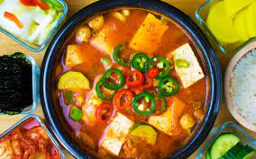

Simple bean paste stew

Description
Simple bean paste stew recipe if you have craving for Korean food
Ingredients
- tofu
- bean paste
- zucchini
- chicken broth
- serrano peppers
- potatoes
- onions
Steps
- cut tofu into cubes
- boil water and add chicken base
- slice zucchini, serrano peppers and onions
- slice potatoes
- put in potatoes first since they take longer to cook, and boil for 10-15 minutes
- add the rest of vegetables, as well as tofu
- add bean paste and a bit of salt if you'd like
- stir for 5-10minutes and serve